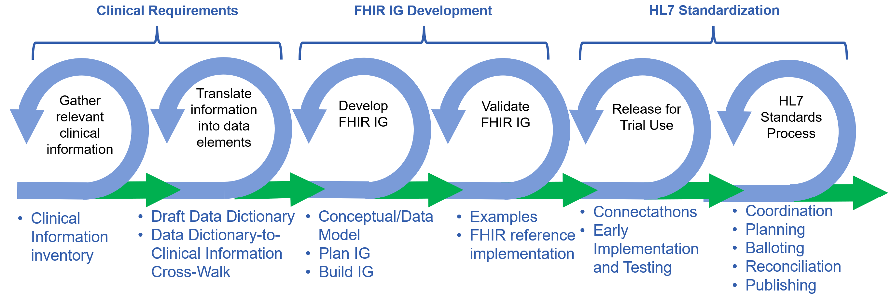

Health data standards help patients, health systems, payers, researchers and others who need to work together communicate using a common language. Goodhealth data standards specify very clearly how data are collected, stored, shared, and/or used such that very piece of data can be unambiguously created andunderstood by all entities within the health ecosystem. Good standards enable semantic interoperability.
Standards are not the end product, from the perspective of this Playbook. However, standards are an essential component for accurate, electronic sharing of dataneed to improve health care and access, and to reduce burden and costs. Standards are community-driven (and sometimes mandated by the Government), and mustbe implemented in systems and workflows by the community.
Here’s high-level background on the key organizations and standards that have been foundational for the mCODE cancer data standard, and to using that standard(and others) to empower Use Cases and provide valuable, new solutions in the health ecosystem.
The Office of the National Coordinator for Health Information Technology (ONC) is the “principal federal entity charged with coordination of nationwide efforts to implement and use the most advanced health information technology and the electronic exchange of health information”. ONC spearheads assembling community agreement on a “standardized set of health data classes and constituent data elements for nationwide, interoperable health information exchange”, called the United States Core Data for Interoperability (USCDI).
ONC has increasingly partnered with Health Level Seven (HL7), the preeminent organization for gathering communities to develop standards that enable health data interoperability. Of the many important efforts within HL7, two are foundational for the work described in this Playbook:
The mCODE FHIR IG and other work in CodeX build on the above foundations. This has many benefits, including helping to ensure (not guaranteed) that mCODE and CodeX products are more likely to be consistent with other efforts. It’s not that simple, but close enough.
Clinical SMEs are involved in every phase

If additional specialties follow these, that are more likely to be interoperable and compatible as part of a life-time patient Standard Health Record
Next, the following topics that comprise the bulk of the Standards Development work are covered: (a) Clinical Requirements, FHIR IG Development, and (c) HL7 Standardization
Each Use Case dictates the clinical information that needs to be collected and shared, and thus the data that will later go into updated or new FHIR IGs.
The goal is for a group of clinical experts to work together to prioritize information requirements within a Data Dictionary needed for the Use Case.
This sub-step and subsequent steps are typically iterative. For example, The clinical expert group may develop a first draft Data Dictionary. Subsequent steps may need to come back to the experts to request clarifications, or suggest updates to the Data Dictionary based on FHIR development, implementation, and testing.
Consider gathering 5 – 20 well-respected subject matter experts (SMEs) representing the breadth of expertise needed to establish and execute the Use Case. The group needs clear leadership of the group (e.g., a Chair or co-Chairs), who are respected, well-organized, and well-versed in the overall Use Case plan.
Consider engaging (depending on the Use Case) patients, doctors, nurses, technicians, researchers, clinical experts from vendors, and/or payers. Some of the SMEs should be familiar with previous work done to define clinical data elements and data dictionaries and are able to help the group understand the applicability of prior efforts to the work at hand.
SMEs do not need to be expert in FHIR development, HL7 processes. The group should use familiar medical terms and define clinical needs.
It’s been found beneficial to include an objective facilitator, with experience moderating discussion and aligning diverse views. One approach to aligning expert views is to create conceptual models with mind-mapping. Common mind-mapping tools include Freemind, XMind, Coggle, or whiteboarding. Surveys of the experts can be useful. See an example output of a survey in the figure below.
It would be helpful for the facilitator, and/or additional participants have familiarity with FHIR and integration of FHIR IGs into systems and processes to lend those perspectives when needed. It would be helpful for someone to be familiar with work on related Use Case to minimize the potential for duplication of effort or divergent approaches to the same data concept.
The group should agree on a charter for their work, including scope, timelines, decision processes, etc. A sample charter can be found here [NOTE: need link to an outside charter or include a template here].
It’s been helpful to agree on how minimal vs. comprehensive the e Data Dictionary should be. General principles in this regard could even be included in the charter, to ensure all participants are on the same page. CodeX work has focused on defining a minimal set of data elements for mCODE and each Use Case – covering the most common important cases, and not necessarily all edge cases. Keeping it minimal helps speed the development work and improve odd of achieving deliverables. The comprehensiveness of the Dictionary could be expanded or supplemented in the future.
A Data Dictionary is a conversion of the clinical information gathered, to logical model data elements.
The following two figures show a work-in-progress from an SME group working to build a Data Dictionary for an initial assessment of a potential cancer patient. The first table contains information needs (potential data elements), from where the information could extracted, references to prior work, and results of a survey of the experts regarding the “Relevance to Patients Like Mine”, to help prioritize toward a minimal set of data elements. The next table is an example of creating a "Rosetta Stone" Data Dictionary, defining data elements mapped to the clinical information requirements.
Once the information need have been prioritized (even if preliminary) here are additional step which may be taken within the clinical subject matter experts group and/or in conjunction with the other work around creating a FHIR IG:
Determine which information (data elements) should be Required, Optional, or Must Support
Review the Data Dictionary
Prioritizing clinical information requirements
Image is placeholder only - will replace with accessible table


Once the clinical subject matter expert group has at least a draft of their Data Dictionary for the Use Case, work can begin on incorporating the clinical information into a FHIR Implementation Guide (IG).
As noted before, the clinical expert group will not simply throw their Dictionary over a transom to the FHIR developers. The two groups will have frequent contact, working to ensure the clinical information needs are captured properly in the FHIR IG, and that the FHIR IG is implementable in systems and processes, and that it is consistent with the Design Principles [NOTE: link] described in the introduction (and discussed below).
The ideal FHIR IG development group includes data modelers, FHIR Implementation Guide developers, terminologists, system developers, and one or more clinical specialty SMEs to ensure the translation of the clinical Data Dictionary into FHIR properly integrations all important information. The group needs clear leadership of the group (e.g., a Chair or co-Chairs), who are respected, well-organized, and well-versed in the overall Use Case plan.
The mCODE FHIR IG and other work in CodeX build on the above framework, including other Design Principles described previously. This has many benefits, including helping to ensure (not guaranteed) that products leveraging this framework are more likely to be consistent with other efforts. It’s not that simple, but close enough.
Before going deeper into how a specialty FHIR IG can be built, consider the concept of a Standard Health Record (see figure below), a vision that would allow every person to have a lifetime health record in which their health data could be captured accurately and consistently across medical specialties. Leveraging a common framework of US Core, standard terminologies, and the other Design Principles would enable individual specialties to develop their IGs relatively independently, and yet relatively consistently. Some cross-specialty coordination would be helpful to maximize implementability and interoperability (filling gaps, avoiding duplication, etc.).
The SHR vision could extend the CodeX/mCODE approach to help new specialties expand communities, and develop and test standards that are interoperable across specialties, and that drive adoption and value for patient health care and research.
Image is placeholder only - will replace with accessible image

The first task of the FHIR IG development group is to review the output of the Clinical group’s Data Dictionary. Generally, at least some of each group have been working together even before the first draft of the Dictionary has been completed.
The next step is to start development of a logical model from the Data Dictionary. The following figure is a conceptual graphic of the mCODE data model (version 3 (STU 3), 2023. Conceptual models are notional and loosely represent the actual FHIR model. However, there are benefits to such representations, including enabling clinical and other SMEs to more easily understand context and use of elements, and illustrating how data elements relate to each other.

As noted before, terminologies, standard clinical code systems, are important for unambiguously defining how data within the data element are represented. When a term cannot be found within an existing code system, it’s possible to work with the owner of the code system to add new terms, provided the justification is convincing.
The following shows how mCODE derived profiles from the afore mentioned framework of the US Core FHIR IG. The subsequent three figures illustrate how the mCODE conceptual model is represented in the FHIR IG for patient demographics, labs, and medications to match the clinical information needs as structured data.

Profiles are created when further specifications (extensions or constraints) are needed on a FHIR base resource or an existing dependent FHIR profile.
The initial choice of US Core was driven by 1) EHRs and 2) regulatory


Next, create a comprehensive set of FHIR resources that capture the product of the previous steps, One approach to validating the work is to match it to representative Use Case personas. The next figure illustrates how parts of a particular patient journey are mapped into data elements and FHIR. See other mCODE examples, represented in the mCODE FHIR IG.


Initial creation of a FHIR IG can start quite early and iterate as the model is improved.
FHIR Shorthand (FSH) is “a domain-specific language for defining FHIR artifacts involved in creation of FHIR Implementation Guides (IG). The goal of FSH is to allow Implementation Guide (IG) creators to more directly express their intent with fewer concerns about underlying FHIR mechanics, and efficiently produce high-quality FHIR IGs.” FSH is an HL7 standard. FSH is increasingly used around the world, and probably on other planets.
FHIR Shorthand (FSH) is an author-friendly language for defining the contents of FHIR Implementation Guides
There are many excellent tutorial on how to leverage FSH to create FHIR IG (e.g., Mark Kramer - Learn to FSH: A friendly introduction to FHIR Shorthand | DevDays 2023 Amsterdam, PDF version)
Health Level Seven (HL7) is the preeminent organization for gathering communities to develop standards that enable health data interoperability. The US and other nations increasingly look to HL7 as the place for health standards development. Agreeing on the FHIR IG to be standardized, and for moving the IG through the HL7 process can take many months – on the order of a year from start to publication of a standard. Time required depends on level of alignment of IG authors, but also on the familiarity of standards process leader for this initiative are familiar with HL7 processes and people. Make sure to include sufficient time in the Use Case plan, and start the standardization process early (well before a draft FHIR IG is relatively complete).
Here are resources that are important to understand: